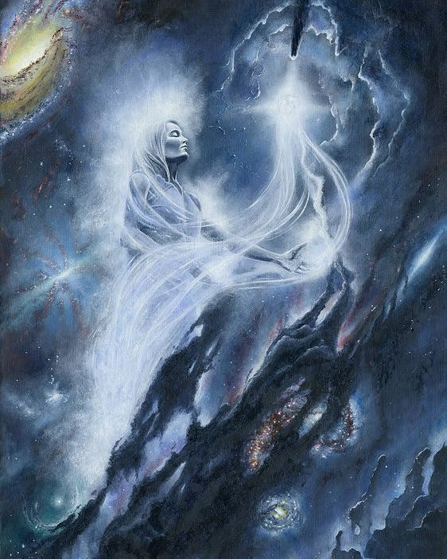
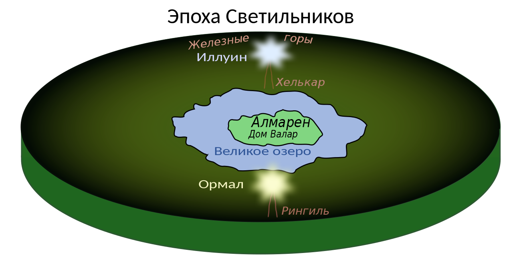
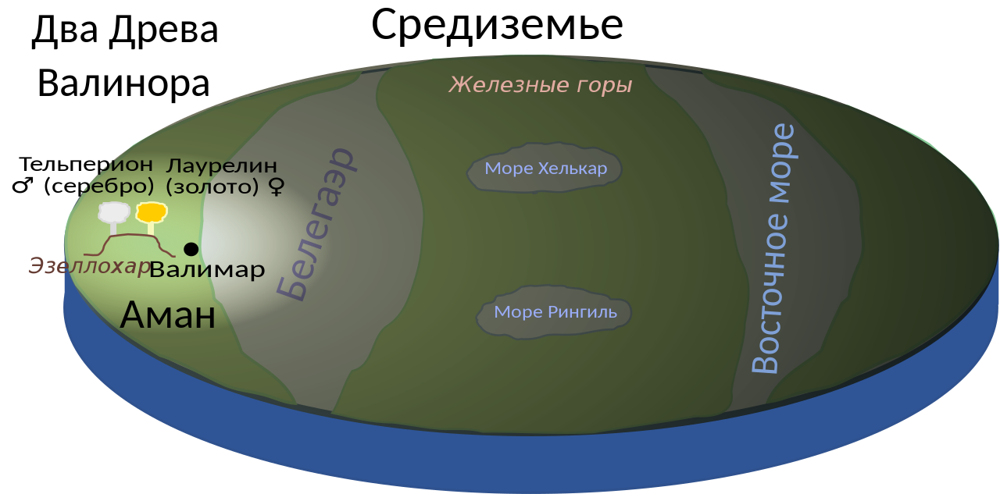
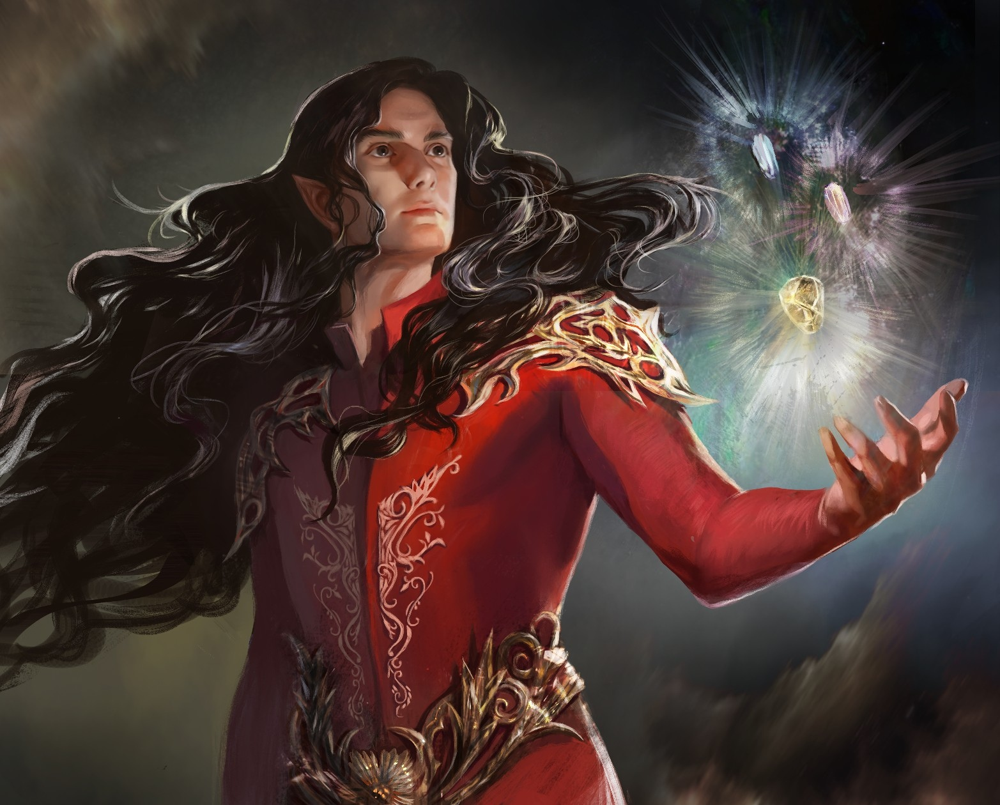
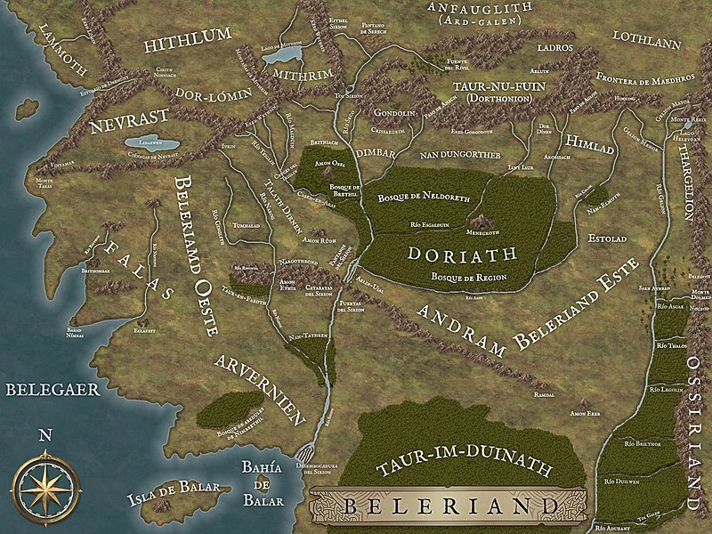
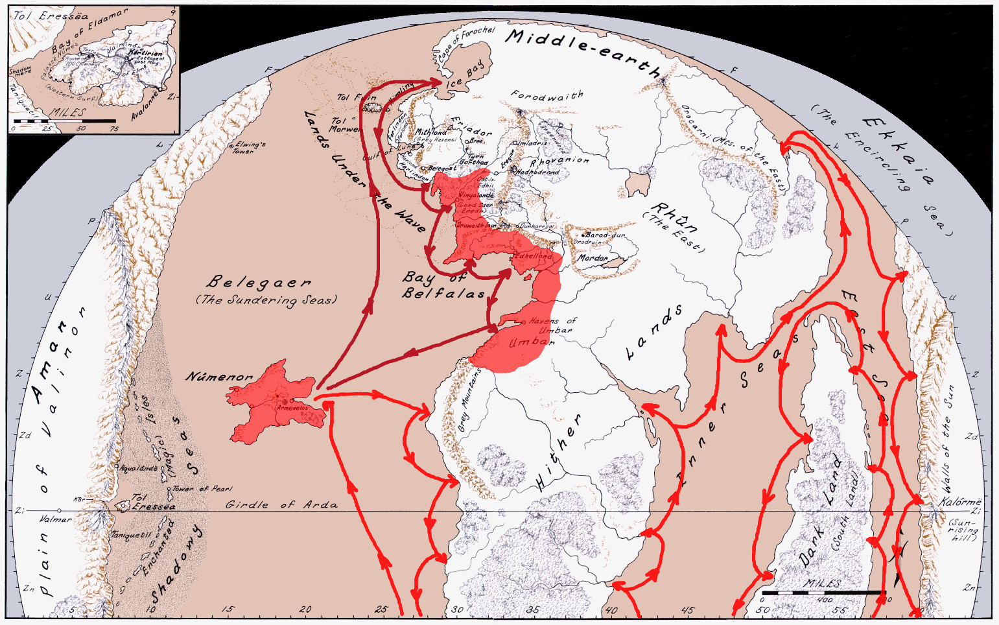
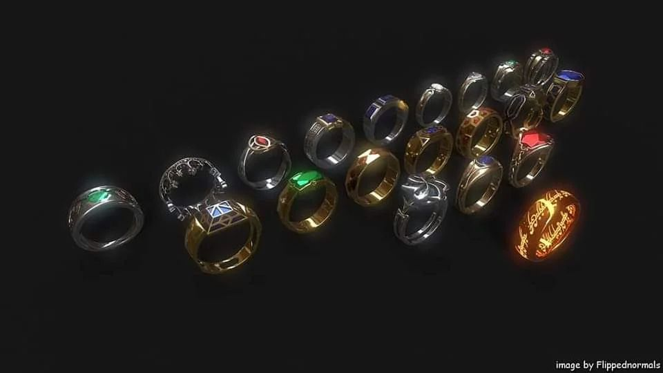
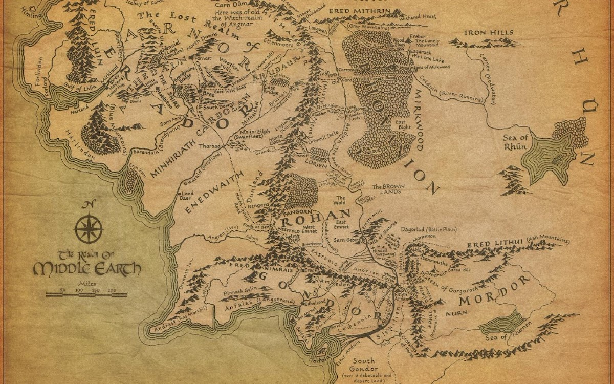

Ժամանակագրություն
Թոլքինը իր աշխարհը բաժանում էր մի քանի դարաշրջանի որի ժամանակ տեղի են ունենում լեգենդարիումի իրադարձությունները։ Աշխարհի ստեղծումից հետո ժամանակաշրջանը բաժանվում է 3 դարաշրջանի իսկ վերջին դարաշրջանը իր հերթին ևս բաժանվում է 3 դարաշրջանի։
- Լուսատուների դարաշրջան
- Ծառերի դարաշրջան
- Արևի դարաշրջան
- Առաջին դարաշրջան
- Երկրորդ դարաշրջան
- Երրորդ դարաշրջան
Աշխարհի Ստեղծումը
Ամեն ինչ սկսվում է նրանից որ տիեզերքի միակ Աստվածը՝ {Էրու Իլյուվատարը} ստեղծում է հրեշտականման արարածների որոնք կոչվում են {Այնուր}-ներ: Նրանց Էրուն շնորհում է գերբնական ուժերով։ Այդ Այնուրներից ամենա հզորները կոչվում են {Վալար}-ներ իսկ մյուսները ովքեր ի տարբերություն Վալարների ուժով զիչում եին նրանք կոչվում են {Մայար}-ներ։  Աշխարհի ստեղծումը սկսվում է այն պահին երբ Էրուն նրանցից յուրաքանչյուրին տալիս է թեմատիկ երաժշտական կարգ։ Սկզբում Այնուրները կատարում էին իրենց երաժշտական թեման ոմանք առանձին ոմանք խմբերով։ Յուրաքանչյուր Այնուրի համար պարզ էր միայն Իլուվատարի մտքերի այն մասը, որից նա ինքն էր սերում. և միայն երգելով կամաց-կամաց նրանք սկսեցին հասկանալ իրենց եղբայրներին: Սակայն, լսելով, նրանք ավելի ու ավելի շատ էին ընկղմվում երաժշտական թեմայի մեջ և նրանց միջև ներդաշնակությունը գնալով սկսում է աճել։ Այնուհետև Էրուն հավաքում է բոլոր Այնուրներին, հայտարարում է նրանց (մեծ թեմա) և հրամայում բոլորին մարմնավորել այն միասին Մեծ երաժշտության մեջ՝ թույլ տալով նրանց լրացնել իրենց թեմաները իրենց մտքերով։ Այնուրների ձայները սկսվում են միահյուսվել մեկ թեմա ունեցող երգի մեջ, որը սկսում է լրացնել տիեզերքի դատարկությունը: ՈՒ այս պահին Այնուրներից ամենահզորը {Մելքորը}, որը Էրու Իլավատարի թելադրանքով ուներ մեծագույն գիտելիքներ, քան իր եղբայրներին էր տրված Տեսնելով այժմ սեփական եսասիրական մտքերը հայտարարելու հնարավորություն՝ նա փորձում է իր մտքերից մի քանիսը հյուսել Մեծ Երաժշտության մեջ՝ ցանկանալով բարձրացնել իրեն վերապահված դերի փառքն ու զորությունը», որն անմիջապես տարաձայնություններ է առաջացնում. նրա մոտ գտնվող երգողները. հուսահատվում են, նրանց մտքերը շփոթվում է, և նրանց երգը ընդհատվում է, իսկ մյուսները սկսում են իրենց երաժշտությունը հարմարեցնել Մելքորի թեմային, և ոչ թե այն մտքին, որը սկզբում պատկանում էր նրանց: Եվ այսպես, Մելքորի բերած անհամաձայնությունը տարածվում է ու աճում, և նախկինում լսված մեղեդիները խեղդվում են հնչյունների խռովության ծովում։ Տեսնելով դա՝ Իլուվատարը երկու անգամ դադարեցնում է Մեծ երաժշտությունը և փոխում հիմնական թեման, բայց ամեն անգամ Մելկորի անհամապատասխան երգը հնչում էր ավելի կատաղի, վիճելով նրա հետ։ Այս պայքարի մեջ Իլուվատարը երրորդ անգամ վեր է կենում և բարձրացնելով իր ձեռքերը, և մի ակորդով, ավելի խորը, քան Անդունդը, ավելի բարձր, քան Հաստատությունը, բոլորովին թափանցող, ինչպես Իլվատարի հայացքը, Երաժշտությունը լռում է: ՈՒ այս պահին ստեղծվում է {Էա} տիեզերքի գաղափարը Իլուվատարը Այնուրին ներկայացնում է իրենց կատարած Մեծ Երաժշտության տեսանելի, նյութական մարմնավորումը։ Այնուհետև այս Աշխարհի ամբողջ պատմությունը ծավալվում է Այնուրների առջև, որում մարմնավորված էին և՛ Իլուվատարի առաջադրած հիմնական թեման, և՛ այն մտքերն ու տարբերակները, որոնք ավելացրել էին Այնուրները, ներառյալ Մելկորի գաղտնի մտքերը: Նախկինում Իլուվատարը Այնուրներին չէր հայտնել իր ծրագրի ողջ ծավալը: Հենց այս պահին նրանք առաջին անգամ տեսնում են Իլուվատարի որդիների՝ {էլֆերի} և {Մարդկանց} գալիք ժամանումը, քանի որ Իլուվատարի զավակները բեղմնավորվել էին հենց Իլուվատարի կողմից, և նրանք հայտնվել էին Մեծ երաժշտության երրորդ թեմայում։ Այն թեմայում, որը Իլուվատարը հենց սկզբից էր տվել նրանք չկային, և Այնուրներից ոչ մեկը ներգրավված չէ նրանց ստեղծման մեջ:
Այնուրներից շատերն իրենց բոլոր մտքերը ուղղում են դեպի իրենց ներկայացված աշխարհը: Նրանց մեջ գլխավորը դարձյալ Մելքորն էր։ Նա ձևացնում էր, թե ցանկանում է գնալ Էա և կառուցել այն՝ ի շահ Իլուվատարի զավակների՝ զսպելով իր միջով անցած կատաղությունը: Սակայն իրականում նա երազում էր իր կամքին ենթարկել և՛ էլֆերին, և՛ մարդկանց, ցանկանում էր ունենալ հպատակներ և ստրուկներ, կոչվել Տեր և իշխել բոլորի կամքին։ Տեսնելով, որ Այնուրները տենչում են ստեղծել այն ամենը, ինչ տեսել են, Իլուվատարը կանչում է նրանց և բացականչում (Թող այդպես լինի)։ Այսպիսով, Էրուն ստեղծում է նյութական Էա Տիեզերքը որի ճիշտ մեջտեղում ստեղծվում է {Արդա} աշխարհը: Մտնելով ստեղծված աշխարհ՝ Վալարները դարնում են նրա անբաժանելի մասը և, հետևաբար, չեն կարողանա լքել Արդան, քանի դեռ այն գոյություն ունի։ Աշխարհը դեռ դատարկ ու անձև էր, և Վալարներին մնում էր միայն մարմնավորել այն, ինչ նրանք տեսել էին Իլուվատարի տեսիլքում: Այս մեծ գործը տևում է անհամար դարեր, մինչև վերջապես, հսկայական Էայի կենտրոնում չառաջացավ այն աշխարհը որը նախատեսված էր Իլուվատարի որդիների համար: Աշխարհի արարման մեջ գլխավոր դերը բաժին է ընկնում {Մանվեին}, {Ուլմոյին} և {Աուլեին}, բայց Մելքորը հենց սկզբից Արդայում էր և խառնվում էր վալարների բոլոր գործերին՝ առաջ մղելով սեփական ծրագրերը։ Նա մեծ հրդեհներ է բորբոքում աշխարհում։ Մինչ Երկիրը դեռ երիտասարդ էր և կրակի մեջ, Մելքորը ցանկանում է լիակատար տիրապետություն ունենալ նրա վրա և Արդան հռչակում է իր թագավորություն: Նրա դեմ դուրս է գալիս նրա եղբայրը՝ Մանվեն։ Շատ Վալարներ են գնում նրան օգնելու որպեսզի Մելքորը չխանգարի նրանց աշխատանքի ավարտին։ Նրանք աշխատում էին միասին՝ տալով Երկրին ամբողջականությունը։ Այսպիսով, վեճ է ծագում Մելքորի և մնացած Վալարների միջև։ Այս անգամ Մելքորը նահանջում է բայց Արդայի թագավորությանը տիրանալու ցանկությունը դեռ տիրում էր նրա սրտում։ Աշխարհ իջնելով՝ Վալարները ստանում են մարմնական կերպարանք, որը նման էր Իլուվատարի որդիներին՝ տարբերվելով նրանցից միայն վեհությամբ և շքեղությամբ: Բայց նրանք, ցանկության դեպքում, կարող են մնալ անտեսանելի։ Մելքորը, որ նախանձում էր մյուս Վալարներին, նույնպես տեսանելի կերպարանք է ընդունում, բայց նրա տեսքը մութ ու վախեցնող է դառնում, հայացքը շոգից թառամած և մահացու ցրտից խոցված։ Այսպիսով սկսվում է առաջին ճակատամարտը Վալարի և Մելքորի միջև Արդային տիրանալու համար։ Հենց որ Վալարը սկսում էին նոր գործ, Մելքորը ոչնչացնում էր կամ աղավաղում նրանց ստեղծածը: Աստիճանաբար, սակայն, Երկիրը ձևավորվում, ամրանում և վերջապես ստեղծվում է Իլուվատարի որդիների տունը անթիվ աստղերի մեջ:
Լուսատուների դարաշրջան
Լուսատուների դարաշրջանը հովվերգական ժամանակաշրջան է Արդայի ստեղծումից և ձևավորումից հետո, երբ Վալարները լցնում են աշխարհը գեղեցկության և ներդաշնակության իսկական հրաշքներով՝ չնայած Մելկորի հետ Առաջին պատերազմի ժամանակ Արդայի ապականությանը: Մելքորի փախուստից հետո Վալարները կատարելագործում են ծովերը ցամաքները և լեռները իսկ {Յավաննան} բույսերի սերմեր է ցանում գետնին։ Այժմ, երբ կրակը ընտելացրել և թաղել էին նախնադարյան բլուրների աղիքներում, լույս էր պետք: Արդային լուսավորելու համար Վալարները ստեղծում են երկու մեծ Լուսատու {Իլյուին} և {Օրմալ} անուններով և դրնում են դրանք քարե հզոր սյուների վրա: Նրանց լույսը հոսում էին Երկրի վրայով, լուսավորելով այն ծայրից ծայր, և հաստատում են հավերժական օր: Այն կենտրոնում, որտեղ երկու Լամպերի լույսը միաձուլվում էր, Վալարները ստեղծում են իրենց Առաջին Թագավորությունը {Ալմարեն կղզում}, Մեծ լճի մեջտեղում:  Այս ժամանակաշրջանում, որը հայտնի է որպես Արդայի գարուն, Երկրի վրա հայտնվում են առաջին բույսերն ու կենդանիները։ Յավաննայի նետած սերմերը բողբոջեցում են, անծայրածիր մարգագետիններում ու մեծ անտառներում հայտնվում են բույսերի անհամար բազմազանություն՝ մամուռներ, խոտեր, հսկա ծառեր, որոնց գագաթները պսակված էին ամպերով, իսկ հատակը ծածկված էիր կանաչ մթնշաղով. Դաշտերն ու առուները բնակեցված էին բազմաթիվ խաղաղ, գեղեցիկ կենդանիներով ու արարածներով։ Մելքորն իր գաղտնի ընկերների ու լրտեսների միջոցով գիտեր այն ամենի մասին, ինչ արվում էր Արդայում, և նա պատված էր ատելությամբ ու նախանձով իր եղբայրների ստեղծագործությունների հանդեպ։ Նա վստահ էր իր ուժերի վրա և սկսում է սպասել հարմար պահի հարձակվելու համար։ Մինչ Վալարները հանգստանում էին իրենց աշխատանքից իրենց Ալմարեն կղզում, Մելքորն աննկատ սահում է Գիշերային պատերի միջով Արդա և գաղտնի կանգնում է հսկայական երկաթե լեռներ, որոնք պարսպապատում էին հյուսիսային հողերը: Լեռների ընդերքում նա կառուցում է {Ուտումնո} մութ ամրոցը, որտեղից սկսում է խարխլել Վալարների ստեղծածը՝ թունավորելով ջրերն ու անտառները։ Յավաննայի գեղեցիկ արարածներին նա տանջում էր այնքան ժամանակ, մինչև նրանք վերածվեցին արյան ծարավ հրեշների։ Եվ երբ Մելքորն իրեն բավական ուժեղ է համարում, նա բացահայտ ընդդիմանում է վալարներին՝ պատերազմ հայտարարելով նրանց։ Մելքորը կարողանում է անակնկալի բերել Վալարին։ Նա ջախջաում էխ երկու Լուսատուները և ամենակուլ բոցը պատում է ամբողջ աշխարհը: Երկրի երկնակամարը ճեղքվում է, ծովը թափվում է իր ափերից։ Վալարների գեղեցիկ թագավորությունը հիմնովին ավերվում է։ Աշխարհը նորից ընկղմվում է խավարի մեջ։ Երկրաշարժեր են լինում, հրդեհներ բռնկվում, հսկայական ալիքներ բարձրանում ծովի վրա։ Վալարի ողջ ուժը պահանջվում է գլոբալ կատակլիզմների ուժը զսպելու և աշխարհի լիակատար ոչնչացումը կանխելու համար: Արդայի ուրվագծերը և նրա ջրերի ու հողերի համաչափությունը կոտրվում է։ Առաջանում են նոր մայրցամաքներ՝ {Ամանը} արևմուտքում, {Միջերկիրը}՝ կենտրոնում։ Մելքորը փախնում և չնայած Տուլկասը փորձում է բռնել նրան, նա թաքնվում է Ուտումնոյի զնդաններում։ Վալարները, ընդհակառակը, փորձում էին կործանման քաոսից փրկել այն ամենը, ինչ հնարավոր էր և չեն կռվում Մելքորի դեմ՝ հասկանալով, որ պատերազմը բերելու է նոր ավերածությունների։ Ավելին, նրանք դեռ չգիտեին, թե որտեղ պերք է հայտնվեինւ Իլուվատարի զավակները, նրանց գալու ժամը թաքնված էր Վալարներից։ Ուստի նրանք վախենում էին կրկին վերականգնել Միջերկիրը։
Երկու Լուսատուների ոչնչացմամբ ավարտվում է Արդայի գարունը և սկսվում ծառերի դարաշրջանը: Վալարները գնում են դեպի արևմուտք դեպի Աման մեծ մայրցամաքը, որը նրանք հետագայում անվանում են Անմահ հողեր, և այնտեղ հիմնում են իրենց նոր թագավորությունը՝ {Վալինորը}: Չար Մելքորի իշխանության տակ են մնում {Միջերկրի} ավերված հողերը։
Ծառերի դարաշրջան
Թոլքինի «Վալինորի տարեգրություն» սեվագրերից հայտնի է, որ ծառերի դարաշրջանը սկսվել է Արդայի ստեղծումից հազար Վալարյան տարի անց (տասը հազար մարդկային տարի) և տևել է Վալարյան մոտ քսան դար, այսինքն՝ (քսան հազար մարդկային տարի): Լուսատուների և Ալմարենի ոչնչացումից հետո Վալարները լքում են Միջերկիրը և հաստատվում Աման արևմտյան մայրցամաքում՝ աշխարհի հենց սահմաններում: Նրա արևելյան ափին նրանք կանգննում են Պելորիի ամենաբարձր լեռները, որոնց հետևում նրանք պատսպարում են իրենց երկրորդ թագավորությունը՝ {Վալինորը}։ Յավաննան իր երգով ստեղծում է երկու ծառ՝ {Թելպերիոն (արծաթագույն)} և {Լաուրելին (ոսկեգույն)}:  Փայլուն ծառերը լուսավորում էին Վալինորիը, բայց Միջերկիրը խավարի մեջ էր՝ լուսավորված միայն աստղերով: Միջերկրի բույսերին և կենդանիներին պաշտպանելու համար Յավաննան քնեցնում է նրանց լույսի բացակայության ժամանակ։ Ծառերի դարաշրջանը բաժանվում է երկու ժամանակաշրջանի. Առաջինը` Երանության տարիներ, Վալինորում խաղաղության և բարգավաճման շրջան էր: {Մանվեն}, Յավաննան և {Աուլեն} Միջերկրում ստեղծում են {Արծիվներին}, {Էնտերին} և {Դվորֆներին}, բայց նրանց բոլորին քնեցնում են մինչ Իլյուվատարի առաջնեկների (էլֆերի) արթնանալը: Մինչ Անմահ հողերը վայելում էին Ծառերի շնորհը, Միջերկրի համար այս ժամանակաշրջանը, որը տևեց տասը հազար մարդկային տարի, մռայլության մեջ էր: Պելորիի լեռները, որոնք պաշտպանում էին Վալինորը ներխուժումից, միևնույն ժամանակ փակում էին Վալարի ծառերի լույսը, իսկ Միջերկիրն ապրում էր սարսափով և վախով դաժան Մելկորի իշխանության ներքո։ Ծառերի դարաշրջանի երկրորդ շրջանը՝ Վալինորի զենիթը, սկսվում է նրանով, որ {Վարդան}, առաջնեկների գալուստի նախօրեին, վերցնում է {Թելպերիոնի} մի արծաթե ցող, հավաքում թասի մեջ և դրանից ստեղծում նոր աստղեր ՄիջԵրկրի վրա՝ շատ ավելի պայծառ, քան նախորդները: Դրանից անմիջապես հետո առաջին էլֆերն արթնանում են Միջերկրի հյուսիս-արևելքում որը նշանավորում է Իլուվատարի երեխաների առաջին դարաշրջանի սկիզբը: Մելկորի ծառաները, գտնելով էլֆերին, սկսեցում են հարձակվել նրանց վրա։ Առեւանգված էլֆերին Մելկորը խեղաթյուրում ու տանջում է ստեղծելով {օրքերին}։ Տեղեկանալով էլֆերի և նրանց վրա Մելկորի հարձակումների մասին՝ Վալարն ու Մայարը մտանում են Միջերկիր, որտեղ նրանք կռվում են Մելքորի դեմ։ Մելքորը պարտություն է կրում և ապաստան գտնում Ուտումնոյում։ Ուտումնոյի պաշարումից հետո Մելքորը գերեվարվում է {Տուլկասի} կողմից և շղթայված, որպես գերի տարվում է Վալինոր։
Մելքորի գերեվարումից հետո {Օրոմեն} էլֆերին հրավիրում է Վալինոր։ Էլֆերից շատերն են ընդունում հրավերը և ճանապարհորդության գնում դեպի արևմուտք։ Ճանապարհին էլֆերի մի մասը որոշում է մնալ Միջերկրում։ Էլֆերի երեք ցեղեր ժամանում են Վալինոր՝ Վանյարները, Նոլդորները և Թելերիները։ Նրանք բնակություն են հաստատեցին Էլդամարում։ Մանդոսի սրահներում երեքդարյա բանտարկությունից հետո Մելքորը ազատություն է ստանում։ Վալարներին խաբելով իր կեղծ ապաշխարությամբ և խոնարհությամբ՝  նա գայթակղության մեջ է գցում Նոլդորների էլֆերին։ Մելքորը սկսում է էլֆերին վատ տրամադրել վալարների դեմ և թշնամություն սերմանել {Ֆեանորի} և {Ֆինգոլֆինի}՝ {Նոլդոր Ֆինվեի} թագավորի որդիների միջև։ {Ունգոլիանտի}՝ նա հսկա մի սարդ էր, օգնությամբ Մելքորը ոչնչացնում է Վալինորի ծառերը, այնուհետև սպանում Ֆինվեին և գողանում {Սիլմարիլներիը}՝ Ֆեանորի ստեղծած երեք մեծագույն զարդերը, որոնք պարունակում էին Վալինորի երկու ծառերի լույսը: նա դնելով Սիլմարիլները իր թագի մեջ ավելի է հզորանում ու ուժեղանում։ Դրանից հետո աշխարհը կրկին ընկղմվում է խավարի մեջ, և միայն աստղերի լույսն էին լուսավորում աշխարհը: Վշտից խռոված Ֆեանորը անիծում է Մելկորին և անվանում {Մորգոթ}՝ աշխարհի սև թշնամի։ Ֆեանորն ապստամբում է վալարների դեմ և իր ժողովրդին առաջնորդում դեպի Միջերկիր՝ եղբայրասպան կոտորած իրականացնելով Ալկուալոնդեում։ Դրանից հետո Մանդոսը հայհոյում է Ֆեանորին և նրա հետևորդներին։ Ֆինարֆինը վերադարնում է Վալինոր, իսկ Ֆեանորն իր բանակով նավերով նավարկում է Միջերկիր՝ դավաճանելով Ֆինգոլֆինին, ով ստիպված էր իր բանակն առաջնորդել Հելկարաքսի սառույցներով ծածկված ծոցով։ Քարերի պատերազմը սկսվում է Միջերկրում և տևում մինչև Առաջին դարի վերջը։ Վալինորի ծառերից՝ Թելպերիոնից մեկ արծաթե ծաղիկ են պոկում, իսկ Լաուրելինից՝ մեկ ոսկե պտուղ: Դրանցից ստեղծում են Լուսինն ու Արեգակը, որոնք դարնում են Արդայի մի մասը։ Առաջին արևածագը նշանավորում է Ծառերի դարաշրջանի ավարտը և Արևի դարաշրջանի սկիզբը, որը շարունակվում է մինչ օրս:Արևի դարաշրջան
.1. Առաջին դարաշրջան _____________________________
Արևի դարաշրջանը Արդայի երեք մեծ դարաշրջաններից վերջինն էր: Այն սկսվում է առաջին արևածագով. միևնույն ժամանակ տեղի է ունենում Նոլդորների էլֆերի արտահոսքը Միջերկիր։ Լուսնի և Արեգակի առաջին ծագմամբ Միջին երկրի արևելքում՝ Հիլդորիենի երկրում, արթնանում են Իլուվիտարի կրտսեր զավակները՝ մարդիկ: Նոլդորների Միջին երկիր ժամանելուց հետո սկսվում է նրանց պատերազմները Մորգոթի հետ։ Դագոր-նուին-Գիլիաթում («Աստղերի տակ ճակատամարտ») Ֆեանորը մահանում է {Բալրոգների} հետ ճակատամարտից հետո։ Այս ժամանակահատվածում Բեոր անունով մարդու ժառանգնորից առաջին մարդիկ ժամանում են Միջերկիր։ Նրանք սկսում են ընկերանալ Ֆինրոդի հետ։ Արևի դարաշրջանի սկզբից և Ֆինգոլֆինի Միջերկիր ժամանումից 455 տարի անց Մորգոթը ճեղքում է Անգբանդի պաշարումը։ Անգբանդից դուրս են գալիս օրքերի և բալրոգների մի մեծ բանակ, որը գլխավորում էր կրակ շնչող Գլաուրունգը՝ «վիշապների հայրը»։ Արքա Ֆինգոլֆինը մենակ մարտահրավեր է նետում Մորգոթին և կռվում նրա հետ Անգբենդի դարպասների մոտ՝ իր Ռինգիլ սրով յոթ վերք պատճառելով նրան, բայց ի վերջո սպանվում է Մորգոթի կողմից։ Ֆինգոնը դարնում է Նոլդորների նոր թագավորը։  Բեորի տոհմից {Բերենը} սիրահարվում է էլֆ {Լյութիենին} Դորիաթի թագավոր Թինգոլի դստերը։ Թինգոլը, չցանկանալով իր դստեր ամուսնությունը մահկանացուի հետ, Բերենից պահանջում է, որ նա գողանա Մորգոթի երկաթե թագից Սիլմարիլը։ Սիլմարիլների արշավում Բերենին ընկերակցում է Ֆինրոդը ով իր իշխանությունը Նարգոտրոնդում փոխանցում է իր եղբորը՝ Օրոդրեթին։ Նրանք գերի են ընկնում Մորգոթի օգնական {Սաուրոնի} կողմից: Ֆինրոդը մահանում է գերության մեջ։ Որոշ ժամանակ անց Ֆեանորի որդու և Լյութիենի օգնությամբ Բերենը ազատ է արձակվում: Նրանք երեքով ճանապարհ են ընկնում դեպի Անգբանդ, որտեղ Բերենը Մորգոթի թագից թաքեւն հանում է մեկ Սիլմարիլ։ Մորգոթի գայլերից Կարխարոթը կծում է Բերենի ձեռքը, որի ափում էր գտնվում Սիլմարիլը: Արծիվները փրկում են Բերենին և Լյութիենին Անգբանդից: Դորիաթում Թինգոլի կազմակերպած որսի ժամանակ Կարխարոթն ու Հուանը մահանում են միմյանց հետ մենամարտում, իսկ էլֆերը Սիլմարիլը հանում են Կարխարոթի փորից։ Վալինորի Մանդոսի սրահներում Լյութիենին առաջարկվում է ընտրություն՝ հավերժ ապրել Վալինարում գտնվող Վալարի հետ, կամ վերադառնալ Միջերկիր Բերենի մոտ, ու դառնալ մահկանացու: Նա ընտրում է մահվան ճակատագիրը։ Նրանք Օսիրիանդում ապրում են ևս 36 տարի, մինչև որ մահանում են ծերությունից։ Առաջին դարաշրջանում Էլֆերի, մարդկանց և դվորֆների բանակները ջախջախվում են Նիրնաեթ Առնոեդիադում «Անթիվ արցունքների ճակատամարտ»-ում։ Գոթմոգը՝ Բալրոգների տիրակալը, սպանում է թագավոր Ֆինգոնին։ Մորգոթը գրավում է ողջ Բելերիանդը և ոչնչացնում էլֆերի և մարդկանց բոլոր թագավորությունները, բացառությամբ Սիրիոն գետի գետաբերանում գտնվող փոքրիկ բնակավայրից և Բալար կղզում գտնվող էլֆերի ճամբարից։
Կիսա-էլֆ կիսա-մարդ {Էարենդիլը} (Բերենի և Լյութիենի թոռը) իր կնոջ՝ Էլվինգի հետ, որը մեկ Սիլմարիլի հետ միասին կարողացնում է փախչել Սիրիոնի նավահանգիստների վրա Ֆեանորինգների հարձակմից և Վինգիլոտ նավով գնում է Վալինոր։ Էարենդիլը դիմում է Վալարի օգնությանը։ Վալարների հսկայական բանակը՝ ավետաբեր Մանվե Էոնվեի և Ֆինարֆինի որդու գլխավորությամբ, մտնում է Բելերիանդ՝ այդ ժամանակ լցված Մորգոթի «անթիվ» օրքերի բանակներով, և սկսվում է Ցասման պատերազմը։ Այն տևում է ավելի քան 40 տարի։ մարդկանց երեք ցեղերը կռվում էին Վալարի կողմում, բայց Մարդկանց մեծ մասը (նոր ժամանած Միջերկրի արևելքից) կռվում էին Մորգոթի կողմից։ Վալարի ուժերը ոչնչացնում են հսկայական թվով օրկերի և գրեթե բոլոր Բալրոգներին։ Մորգոթը մարտի է նետում Անկալագոնի գլխավորած թեւավոր վիշապներին: Անկալագոնը սպանվում է Էարենդիլի հետ կռվի ժամանակ։ Ցասման պատերազմի արդյունքում Բելերիանդը ավերվում է և անցնում ջրի տակ։ Բելերիանդի ողջ մնացած էլֆերի մի մասը գնում է Աման՝ հաստատվելով Տոլ Էրեսեա կղզում, իսկ մի մասը որոշում է մնալ Միջերկրում։ Վերջիններիս թվում էին Ֆալատրիմի առաջնորդ Կիրդան Կիրպբելը, Թինգոլ Կելեբորնը և նրա կինը՝ {Գալադրիելը} Ֆինարֆինի դուստրը, Ֆինգոնի որդին {Գիլ-Գալադը} և Էրենդիլի որդին՝ {Էլրոնդ} Կիսա-Էլֆը։ Վալարի Դատարանի որոշմամբ Մորգոթը մահապատժի է ենթարկվում (նրան զրկում են մարմնից)։ Այն ամենը, ինչ մնացել էր նրանից որպես ամբողջ էակ, ոգին էր, որը թափառում էր աշխարհում: Պարտվելով Մորգոթը նետվում է Գիշերային դարպասների միջով Աշխարհի պարիսպներից այն կողմ։
.2. Երկրորդ դարաշրջան _____________________________
Երկրորդ դարաշրջանը սկսվում է Նոլդոր Էլֆերի Միջերկիր վերադարձից 584 տարի անց, երբ ավարտվում է Ցասման պատերազմը, Մորգոթը պարտվում է, իսկ Բելերիանդը ավերվում և հեղեղվում է։ Երկրորդ դարաշրջանի սկզբին Միջերկրի արևմուտքում կառուցվում է Մոխրագույն ապաստարանները (Միտլոնդ), և հիմնադրվում է Լինդոնի էլֆերի թագավորությունը, որի թագավոր է դարնում Գիլ-Գալադը։ Էդաինների՝ Էդաինի տոհմի մարդկանց համար Վալարները ստեղծումեն Անդոր կղզին Ամանի և Միջերկրի միջտեղում ի նշան այն օգնության որ մարդիք ոգնեցին Վալարներին Ցասման պատերազմի ժամանակ: Երբ առաջին մարդիկ հասնում են այս կղզի, հիմնադրում են {Նումենոր} թագավորությունը։ Նրա առաջին թագավորը Էլրոս Տար-Մինյաթուրն էր՝ Էլրոնդի եղբայրը։ Երկրորդ դարաշրջանի սկզբից մոտ 40 տարի անց, Էրեդ Լուինի դվորֆները գալիս են Մառախլապատ լեռներ և հիմնադրում են {Խազադ-դումի} թագավորությունը: Երկրորդ դարաշրջանի 600 թվականին Նումինոր-ի առաջին նավը Վեանտուրի հրամանատարությամբ, կատարում է իր առաջին ճանապարհորդությունը դեպի Միջերկիր. Նումենորացիները ընկերանում են Գիլ-Գալադի և {Լինդոնի} Էլֆերի հետ։ Նումենորացիները սկսում են կիսվել իրենց գիտելիքներով Միջերկրի բնակիչների հետ, սովորեցնում էին հացահատիկ ցանել և ալյուր աղալ, փայտ և քար մշակել: Երկրորդ դարաշրջանի 750-ին սկսվում են շինարարությունը Օստ-ին-Էդհիլ քաղաքի՝ {Էրեգիոնի} Էլֆերի թագավորության մայրաքաղաքի վրա։ Էրեգիոնը գտնվում էր Էրիադորի հարավ-արևելքում գտնվող Մառախլապատ լեռներում, Խազադ-դում դվորֆների թագավորության արևմտյան սահմաններում:
Այս ժամանակ Սաուրոնը Մորգոթի հավատարիմ ծառաներից ամենա հզորը հայտնվում է Միջերկրի արևելքում: 882 թվականին Գիլ-գալադը նամակ է ուղարկում Նումենորի թագավորին, որում ազդարարում է «նոր ստվերի հայտնվելն արևելքում» և ենթադրում, որ դա «Մորգոթի ծառաներից մեկն է», որը շատ մարդկանց դրդում է չարության։ Երկրորդ դարի մոտ 1000 թվականին Սաուրոնը բնակություն է հաստատում {Մորդորում} և անհանգստանալով  Նումենորացիների աճող հզորությունից, սկսում է այնտեղ կառուցել {Բարադ-դուր} ամրոցը։ Այս ամենից հետո Սաուրոնը ստանում է գեղեցիկ տեսք և իրեն անվանելով Վալարի սուրհանդակ {Աննատար} հայտնվում է Գիլ-Գալադին և Էլրոնդին մոտ՝ առաջարկելով նրանց իր «ընկերությունը»։ Բայց նրանք նրան չեն վստահում։ Դրանից հետո Աննատարը հայտվում է Էրեգիոնում որի դարբին՝ {Կելեբրիմբորի} համաձայնում է սովորել նրա հմտությունները։ Երկրորդ դարշրջանի մոտ 1500 թվականին Կելեբրիմբորը Անատարի հետ միասին ստեղծում են {Իշխանության Մատանիները} յոթ մատանի դվորֆնորի համար, ինը մատանի՝ մարդկանց համար։ Դրանից հետո բացահայտվում է որ Անատարը դա Սաուրոնն է և նրան վտարում են Էրեգեոնից։ Այդ ժամանակ Կելեբրիմբորը արդեն առանց Սաուրոնի մասնակցության, ստեղծում է երեք էլֆային մատանիները (Վիլյա, Նենյա և Նարյա): Իսկ Սաուրոնը Մորդորում ստեղծում է «Համաիշխանության միածին Մատանին»՝ որի շնորհիվ նա սկսում է իշխել Իշխանության մյուս Մատանիների վրա։ Միևնույն ժամանակ ավարտվում է Բարադ-դուրի շինարարությունը։ Սաուրոնի կողմից «Համաիշխանության միածին մատանու» ստեղծումից հետո էլֆերը սկսում են հասկանալ Սաուրոնի ծրագրերը. Կելեբրիմբորը երեք Էլֆերի մատանիներից մեկը տալիս է Գալադրիելին, իսկ մյուս երկուսն ուղարկում է Գիլ-Գալադին և Կիրդանին։ Երկրորդ դարշրջանի 1697 թվականին Սաուրոնը հսկայական օրքերի բանակով գրավում և ավերում է Էրեգոնը, սպանում Կելեբրիմբորին և գերեվարում դվորֆների յոթ, և մարդկանց ինը մատանիները։ Սաուրոնը ինը մատանիները հանձնում է իրեն համակրող ինը մարդկանց թագավորներին և նրանք սկսում են ենթարկվել նրա կամքին և ի վերջո դառնում են {Նազգուլներ}։  Իսկ յոթ մատանիները նա տվեց դվորֆներին յոթ ցեղերի թագավորների, Նրանք ընդունեցին այդ մատանիները բայց, ի տարբերություն մարդկանց, Սաուրոնը չկարողացավ հնազանդեցնել նրանց, թեև մատանիները մեծ ագահություն էին բորբոքում դվորֆների սրտերում: Էլրոնդը, որն ուղարկվել էր Գիլ-Գալադի կողմից Էրեգիոնին օգնելու համար, նահանջում է և {Ռիվենդելը} հաստատում որպես Էլֆերի ամրոց Էրիադորում: Հաջորդ երկու տարիների ընթացքում Սաուրոնը գրավում է գրեթե ողջ Էրիադորը։ Գիլ-Գալադը օգնության խնդրանքով դիմում է Նումենորի թագավոր Տար-Մինաստիրին։ ԵՎ նա մեծ նավատորմ է ուղարկում Միջերկիր։ Նումենորացիները օգնում են էլֆերին հաղթել Սաուրոնի հսկայական օրքերի բանակին։ Սաուրոնը երդվում է վրեժ լուծել Նումենորից։ Դրանից հետո Միջերկրում խաղաղությունը է տիրում։ Հետագա դարերում նումենորացիները սկսում են մշտական բնակավայրեր հիմնել ՄիջԵրկրի արևմտյան ափերին, և նրանց հզորությունը այնքան է մեծանում, որ Սաուրոնը երկար ժամանակ չէր համարձակվում հայտնվել Մորդորից արևմուտք։ Այնուամենայնիվ, Միջերկրի արևելքում և հարավում Սաուրոնը գերության է ենթարկում գրեթե բոլոր մարդկային ցեղերին։ Նումենորի վրա ստվեր է ընկնում և շատ նումենորացիներ սկսում են կասկածի տակ դնել վալարների պատվիրանները, մասնավորապես՝ դեպի արևմուտք նավարկելու արգելքը (որտեղ Վալինորն էր), նրանք նույնիսկ նախանձում էին էլֆերի անմահությանը։ Նումենորացիներն ավելի ու ավելի էին հպարտանում՝ իրենց համար շքեղ զարդարված դամբարաններ էին կանգնեցնում Միջերկրում նրանք սկսում են հարկ ու տուրք հավաքել տեղի ցեղերից։ Երկրորդ դարաշրջանի 2251 թվականին Նումենորում տեղի է ունենում պառակտում նրանց մեծ մասը («արքայի ժողովուրդը») հրաժարվում են Էլֆերի սովորույթներից ու լեզուներից, բայց մի փոքր մասը («հավատարիմները») շարունակում են բարեկամ մնալ էլֆերին։ Նումենորացիները «հավատարիմներից» հիմնում են Պելարգիր քաղաքը Անդուին գետի վրա 2350 թվականին և օգտագործում այս բնակավայրը որպես իրենց գլխավոր նավահանգիստ ՄիջԵրկրում: 2899 թվականին Ար-Ադունահորը դարնում է Նումենորի թագավոր։ Նրա օրոք արգելվում է էլֆական լեզուներով խոսելն ու սովորելը, սկսվում է «հավատարիմ» նումենորացիների հալածանքները, և էլֆերն սկսում են այլևս չայցելել Նումենոր։ Թար-Փալանտիր թագավորը զղջում է նախորդ թագավորների արարքների համար, նա ցանկանում է վերականգնել բարեկամությունը վալարների և էլֆերի հետ և դադարեցնում է «հավատարիմների» հալածանքը, բայց էլֆերի նավերն այլևս չեյն նավարկում Նումենոր։ Տար-Փալանտիրի եղբայր Գիմիլչադը «արքայական մարդկանց» (Վալարի հակառակորդների) առաջնորդն էր և բացահայտորեն ընդդիմանում էր Տար-Փալանտիրի կամքին։ Նումենորում քաղաքացիական պատերազմ է սկսվում։ Տար-Փալանտիրն ուներ մի դուստր՝ {Միրիելը}։ Թագավորի մահից հետո Գիմիլխադի որդի Փարազոնը Միրիելին կին է առնում, հակառակ նրա կամքին և Նումենորի օրենքներին, քանի որ նա իր հոր եղբոր դուստրն էր։ Երկրորդ դարաշրջանի 3255-ին նա իր ձեռքն է վերցնում իշխանությունը Նումենորում՝ իրեն անվանելով {Ար-Փարազոն}։ Երկրորդ դարաշրջանի 3261թ-ին Ար-Ֆարազոնը հսկայական բանակով ժամանում է Միջերկիր՝ ափ դուրս գալով Ումբարում։ Նա մարտահրավեր է նետում Սաուրոնին և պահանջում, որ նա գա և հավատարմության երդում տա իրեն։ Սաուրոնը հայտնվում է և առանց կռվի հանձնվում, ու որպես գերի տարվում Նումենոր։ Նումենորում Սաուրոնը մի քանի տարի գերեվարումից հետո խորամանկությամբ դարնում է թագավորի վստահելի խորհրդականը, որից հետո աստիճանաբար համոզում է նրան և նումենորացիների մեծ մասին երկրպագել Մելքորին։ Նումենորի մայրաքաղաք Արմենելոսում կառուցում է Մելքորի տաճարը, որում մարդկային զոհաբերություններ են սկսում անել։ Ծերության մեջ Ար-Ֆարազոնը երբ զգում է մահվան մոտենալը, Սաուրոնը խոստանում է նրան հավերժական կյանք, եթե նա գրավի Վալինորը և հաղթեր Վալարներին: Դրա համար Ար-Փարազոնը կառուցում է հսկայական նավատորմ։ Երկրորդ դարի 3319 թվականին նումենորացիների նավատորմը պատերազմի է դուրս գալիս վալարների դեմ։ Երբ Ար-Փարազոնի բանակը ափ է դուրս գալիս Վալինորմ, Մանվեն կանչում է Իլուվատարին։ Էրու Իլուվատարը փոխում է աշխարհի բնույթը երկիրը կլորացնում է, և ծովի մեջ բացվում է մի անհուն անդունդ Նումենորի և Վալինորի միջև Նումենորեացիների բոլոր նավերը քշվում են անդունդը, և նրանք բոլորը խեղդվում են։ Ար-Փարազոնը և Վալինոր երկիր ոտք դրած մահկանացու մարտիկները թաղվում են ժայռերի փլատակների տակ։ Նումենորը տապալվել է գետնին և սուզվել ջրի տակ։ Նումենորի անկման ժամանակ «հավատարիմները» փրկվում են {Էլենդիլի} և նրա որդիների՝ {Իսիլդուրի} գլխավորությամբ։ Նրանց ինը նավերը հասանում են Միջերկրի ափերը։ Էլենդիլը և նրա որդին Միջերկրում հիմնում են նոր թագավորություններ՝ {Գոնդոր} և {Առնոր}: Սաուրոնը մահանում է (զրկվում է նյութական մարմնից) Նումենորում, բայց նրա ոգին ողջ է մնում և վերադարնում Մորդոր։ Մոտ հարյուր տարի անց Սաուրոնը, որը ուժ էր հավաքել այդքան տարի, հարձակվում է Գոնդորի վրա և գրավում {Մինաս Իթիլ} ամրոցը։ Էլենդիլը օգնություն է խնդրում Գիլ-Գալադից, և 3430 թվականին մարդիկ և էլֆերը կազմում են մարդկանց-էլֆերի Վերջին դաշինքը։ 3434 թվականին Դագորլադի ճակատամարտում էլֆերի և մարդկանց բանակները հաղթում են և սկսվում է Բարադ-դուրի պաշարումը, որը տևում է յոթ տարի։ Ի վերջո պաշարումից հոկնած, Սաուրոնի հոգին զրահների մեջ մտած հենց ինքն է դուրս գալիս Գիլ-Գալադի ու Էլենդիլի դեմ կռվելու, և երկուսն էլ մահանում են, իսկ Էլենդիլի սուրը Նարսիլը կոտրվում է։ Նարսիլի մի բեկորով Իսիլդուրը կտրում է Սաուրոնի մատը որի վրա էր հագած Համաիշղանության Մատանին և վերցնում իրեն։ Սաուրոնը զրկվելով մատանուց և կյանքի աղբյուրից պարտություն է կրում։ ՈՒ Այսպիսով ավարտվում է Երկրորդ դարաշրջանը։
.3. Երրորդ դարաշրջան _____________________________
Երրորդ դարաշրջանի սկզբում Վալարները տեսնելով Սաուրոնի պարտությունը որոշում են միջերկիր ուղարկել 5 մայարների որպեսի նրանք շրջեն միջերկրով ու այնտեղ ապրելով ուսումնասիրեն աշխարհը իմաստություն հավաքեն, օգնեին այնտեղ ապրողներին։ Նրանք պետք է ուծշադիր լինեյն որպեսի Սաուրոնը այլևս չհայտնվեր։ Նրանք ընդունում են մարդկային տարեծների տեսք։ Իսիլդուրը՝ Էլենդիլի որդին, կտրելով Սաուրոնի ձեռքը, վերցնում է Մատանին՝ համարելով այն իր դինաստիայի հարստությունը։ Սաուրոնը դրանից հետո կորցնում է իր ֆիզիկական ուժը։ Հետագայում, երբ Իսիլդուրին սպանում են օրկերը, մատանին ընկնում է Անդուին գետը և այնտեղ մնում երկու հազար տարի։ Երկու հազար տարի անց Մատանին գտնում է գետի մոտակայքում ապրող մի {հոբիթ}՝ Դեագոլը։ Նրա ընկերը՝ Սմեագոլը անմիջապես ընկնում է մատանու ազդեցության տակ և խլում Մատանին Դեագոլից՝ խեղդամահ անելով նրան։ Սմեագոլը թաքնվում է Մառախլապատ լեռներում, որտեղ մատանին երկարացնում է նրա կյանքը և կերպարանափոպում նրան մի արարածի, որին կոչում էին {Գոլլում}։
Դվորֆների {Էրեբոր} ամրոցը, որը գտնվում էր Միայնակ լեռան ներսում, կառուցել էր դվորֆների Տրաին առաջին արքան դեռ Արևի Երրորդ Դարաշրջանում 1999թվականին։ Նրանք կառուցել էին այն Երբ Մորիայի խոր քարանձավներում դվորֆների ագահության պատճառով արթնանում է Բալռոգներից մեկը և Արքան իր ժողովրդի հետ փախնում է Միայնակ լեռը։ 6 դար անց {Սմաուգ} անունով վիշապը, իմանալով Էրեբորի գանձերի ու հարստությունների մասին, հարձակվում է թագավորության վրա։ Դվորֆների մեծ մասը զոհվում են, փրկվում են միայն Տրորը, նրա որդի Տրաին երկրերդ-ը, նրա թոռ {Տորինը} և մի խումբ դվորֆներ։ Դվորֆներին վտարելուց հետո նա մտնում է նրանց կուտակած գանձերի մեջ և խորը քուն մտնում։ Որոշ ժամանակ անց դվորֆների արքա Տրաին երկրորդ-ը որոշում է վերադառնալ Էրեբոր։ Դվորֆները կռվեւմ են Սաուրոնից հետո որբացած օրքերի հետ բայց Տրաինը գերեվարվում է և բանտարկվում {Դոլ-Գուլդուրում}։ 9 տարի անց {Գենդելֆը} անունով հրաշագործը գտնում է նրան։ Տրաինը մահից առաջ նրան է հանձնում մի քարտեզ և Միայնակ լեռան բանալին։ Գենդալֆը հասկանում է որ Դոլ-Գուլդուրում է ապաստան գտել Սաուրոնը այս անգամ {Նիկրոմանտ} անունի տակ թաքնվելով։  Հրաշագործ կախարդը փորձում է զգուշացնել դա Սպիտակ Խորհրդին որը բաղկացած էր էլֆերից և {Սարուման} կախարդից, բայց խորհրդը լուրջ չի ընդունում նրան։ Որոշ ժամանակ անց Գենդելֆը Տորինի հետ միասին որոշում են արշավ կազմակերպել դեպի Էրեբոր վերադարձնելու իրենց կորցրած թագավորությունը։ Արշավին մասնակցում են 13 դվորֆներ, Տորինը, Գենդելֆը և մեկ հոբիթ {Բիլբո Բեգինսը}՝ նրան ընտրում են իրենց ընկերակից որովհետև հոբիթները հայտնի էին իրենց աննկատությամբ և ճարպիկությամբ։ Նա պետք է թաքուն մտներ Էրեբոր ամրոցը և քնած Սմաուգի մոտից գողանար Արկինստոն ադամանդը։ Մառախլապատ լեռներում հայտնվելով՝ փոթորիկը ստիպում է խմբին թաքնվել քարանձավներում, որտեղ նրանց առևանգում են {գոբլինները} և տանում են իրենց արքայի մոտ։ Գենդելֆը փրկում է դվորֆներին։ Միայն Բիլբոն՝ փախչելով գոբլիններից մոլորվում է քարայրներում։ Այնտեղ նա հանդիպում է Գոլումին։ Գոլումը անզգուշության պատճառով կորցնում է Համաիշխանության մատանին իսկ Բիլբոն գտնում է այդ խորհրդավոր մատանին։ Գոլումը առաջարկում է նրան հանելուկների գուշակում խաղալ։ Եթե հաղթեր Բիլբոն, ապա Գոլլումը նրան դուրս պետք է բերեր քարայրից, իսկ եթե հաղթեր Գոլլումը՝ նա կուտեր Բիլբոին։ Բիլբոն հաղթում է, բայց Գոլլումը կասկածում է նրան մատանու գողացման մեջ և որոշում է սպանել։ Հոբիթը, պատահաբար կրելով մատանին, դառնում է անտեսանելի և հետևելով Գոլլումին կարողանում է դուրս գալ քարանձավից։ Շուտով նա հանդիպում է իր խմբին։ Մոտենալով Միայնակ լեռանը, ճանապարհորդները Լճաշեն Քաղաքում հանդիպում են մարդկանց, որոնք կարծում էին, թե դվորֆները կիրականացնեն գուշակությունն ու կսպանեն Սմաուգին։ Մատանու օգնությամբ Բիլբոն մտնում է վիշապի մոտ և գտնում այնտեղից Արկինստոնը։ Երբ Բիլբոն հետ է գալիս վիշապի մոտ, իմանալու համար նրա թույլ կողմը, Սմաուգն արթնանում է և զրուցում հոբիթի հետ։ Բիլբոին խորամանկությամբ հաջողվում է իմանալ վիշապի թույլ կողմը։ Երբ Սմաուգն իմանում է, որ դվորֆները օգնել են Լճաշեն Քաղաքի բնակիչները, նա զայրանում է և գնում կործանելու քաղաքը։ Բարդ անունով մի մարդ հատուկ նետով կարողանում է սպանել վիշապին հարվածելով նրա թույլ տեղին։ ԵՎ դվորֆները վերջնականապես տիրանում են իրենց լեռանը։ Հոբիթը ստանում է դվորֆների հարստության շատ փոքրիկ մաս, բայց տուն է վերադարնաում շատ հարուստ, իր հետ տուն տանելով Համաիշխանության Միածին Մատանին։
Հոբիթ Բիլբո Բեգինսը, հասնելով պատկառելի 111 տարեկանի, թոշակի է անցնում և իր եղբորորդուն՝ {Ֆրոդոյին} է թողնում կախարդական մատանին, որն անտեսանելի է դարձնում դրա կրողներին։ Մագ Գենդալֆից Ֆրոդոն իմանում է, որ նա ստացել է ոչ թե ինչ որ մի մատանի, այլ հենց Համաիշխանության մատանին՝ մութ տիրակալ Սաուրոնի ստեղծաց չարիքը, Մորդորի երկրից, որը ստեղծվել էր բոլոր մյուս մատանիները կրողներին իրեն հնազանդեցնելու ու ենթարկելու համար: Մատանին ուներ իր կամքը և կարողանում էր երկարացնել տիրոջ կյանքը՝ միաժամանակ ստրկացնելով նրան, խեղաթյուրելով նրա մտքերը և ցանկություն առաջացնել տիրել Մատանուն։ Մատանու օգնությամբ շատ տարիներ առաջ պարտված Սաուրոնը կարող էր վերականգնել կորցրած ուժերը։ Մատանին ոչնչացնելու միայն մեկ ճանապարհ կար՝ այն պետք էր նետել Մորդորի Կրակոտ Հրաբխի մեջ, որտեղ այն ստեղծվել էր: Հոբիթը իր ընկերներ Սեմի, Մերրինի և Փիփինի հետ ճամփորդում է էլֆերի քաղաք Ռիվենդեյլ՝ ազատվելու վտանգավոր նվերից: Անտառի առեղծվածային վարպետ Թոմ Բոմբադիլի օգնությամբ հերոսները հասնում են Պրեգորիե գյուղ, որտեղ նրանք գտնում են իրենց ուղեկցորդ՝ ասպետ {Արագորնին} որին Գենդելֆներ խնդրել ուղեկցել նրանց։ Հոբիթներին հետապնդում էին սև ձիավորները՝ Նազգուլները, Սաուրոնի ուրվական ծառաները, ովքեր հեռվից զգում են Մատանին: Հոբիթներն ու Արագորնը հասնում են Զավերտի բլուրը, որտեղ Նազգուլների առաջնորդը Մորգուլի շեղբով ծանր վիրավորում է Ֆրոդոյի ուսը։ Մեծ դժվարությամբ և էլֆ Գլորֆինդելի օգնությամբ, որին նրանք հանդիպում են ճանապարհին, հերոսներին հաջողվում է հասնել Ռիվենդեյլ, որտեղ էլֆերի տիրակալ՝ Էլրոնդը, բուժում է վիրավոր հոբիթին։ Տարբեր ժողովուրդների և թագավորությունների ներկայացուցիչներ (մարդիկ, էլֆեր, դվորֆներ և այլն) գալիս են Ռիվենդել՝ քննարկելու, թե ինչ անել Մատանու հետ։ Գենդալֆը խոսում է Սաուրոնի կողմից ստրկացած, Իսթարիների օթյակի ղեկավարի, սպիտակ մոգ Սարումանի դավաճանության մասին, ով ցանկանում էր Մատանին իրեն վերցնել։ Նա գաղտնի դաշինք է կնքում Մորդորի հետ։ Պարզվում է որ Արագորնը Արնորի և Գոնդորի թագավորների դինաստիայի հետնորդն է։ Խորհուրդը որոշում է փորձել ոչնչացնել Մատանին Օրոդրուինում, Ֆրոդոն կոչվում է իրականացնելու այս առաքելությունը։ Գենդալֆը, Արագորնը, {Բորոմիրը}, {Գիմլի} դվորֆը և Էլֆ {Լեգոլասը} երեք այլ հոբիթները միանում են Ֆրոդոյին ուղեկցելու։ Այսպիսով ձևավորվում է Մատանու եղբայրությունը։ Կարադրասի անցուղին անցնելու անհաջող փորձից հետո հերոսները որոշում են անցնել Մորիայի զնդաններով՝ դվորֆների հնագույն թագավորությամբ։ Զնդանները լցվում են չար գոբլիններով, ինչպես նաև Մորգոթի հին դևով, որին դարեր առաջ արթնացրել էին դվորֆները: Մորիայում երկար թափառելուց հետո ջոկատը վրա են հարձակվում օրքերը։ Ջոկատին հաջողվում է դուրս գալ, բայց Խազադ-դումի կամրջի վրա նրանց առաջն է անցնում Բալրոգը։ Բալրոգի հետ ճակատամարտի մեջ մտնելով՝ Գենդալֆը թշնամու հետ միասին ընկնում է անդունդը՝ ջոկատը թողնելով առանց առաջնորդի, բայց նրա տեղը զբաղեցնում է Արագորնը։ Դրանից հետո Բորոմիրը փորձում է համոզել Ֆրոդոյին և նրա ուղեկիցներին գնալ Գոնդոր և փորձել օգտագործել Մատանին թշնամու դեմ։ Մատանին մի պահ խելագարեցնում է նրան, և նա փորձում է այն խլել Ֆրոդոյից։ Ֆրոդոն մատանու օգնությամբ թաքնվում է և որոշում է մենակ շարունակել ճանապարհը, որպեսզի ընկերներին այլևս գայթակղության ու վտանգի տակ չդնի, սակայն Սեմին հաջողվում է հետևել նրան։ Զինվորական խորհրդի ժամանակ որոշվում է բանակ ուղարկել Մորդորի դարպասներ՝ Սաուրոնի ուշադրությունը Օրոդրուինից շեղելու և Ֆրոդոյին առաջադրանքն ավարտելու հնարավորություն տալու համար։ Դարպասների մոտ Արևմուտքի զորքերը հարձակվում են Մորդորի հզորությամբ և քանակով գերազանցող ուժերի վրա: Դրանով նրանք շեղում են Սաուրոնին և Հոբիթներն իրենց վերջին ուժերով հասնում են Օրոդրուին հրաբխի մոտ։ Հյուծված Ֆրոդոն վերջապես ընկնում է Մատանու իշխանության տակ և հայտարարում, որ չի կործանի այն, այլ ցանկանում է ինքը լինել մատանու տիրակալը։ Այդ պահին Գոլումը հարձակվում է Ֆրոդոյի վրա, կծում է նրա մատը և տիրանում Մատանուն, բայց ակամայից մատանու հմայքի հետ միասին ընկնում է հրաբխի մեջ, դրանով իսկ ակամա մատանին ոչնչացնում է։ Սաուրոնը, ով ղեկավարում էր օրքերին, Մատանու կործանվելուն պես այս անգամ ընդմիշտ է մահանում (զրկվում մարմնից), նրա ամրությունները ոչնչացվում են, և նրա զորքերը վախից փախչում են։ Հսկա արծիվները Ֆրոդոյին և Սեմին փրկում են ժայթքող Օրոդրուինի վրայից: Արագորնը Մինաս Տիրիթում Գանդելֆի կողմից հռչակվում է Գոնդորի արքա։ Ինքը՝ Արագորնը, իր կին է վերցնում Էլրոնդի դստերը՝ Արվենին։ Չորս հոբիթները ճանաչվում են որպես հերոսներ։ Տուն վերադառնալուն պես նրանք հայտնաբերում են, որ Սարումանի գլխավորությամբ ավազակները գրավել են իրենց երկիրը։ Հերոսները բարձրացնում են հոբիթների ապստամբություն և դուրս մղում զավթիչներին։ Ֆրոդոն անցնում է խաղաղ կյանքի և նկարագրում է իր արկածները Կարմիր գրքում։ Ֆրոդոն Բիլբոյի և Էլֆերի երեք մատանիների պահապանների՝ Գենդալֆի, Էլրոնդի և Գալադրիելի հետ միասին նավով նավարկում են դեպի Անմահ երկրներ՝ Վալինոր: Սկսվում է չորրորդ դարաշրջանը որի ընթացքում էլֆերը կամաց-կամաց լքում են միջերկիրը և սկսվում է մահկանացու մարդկանց դարաշրջանը։